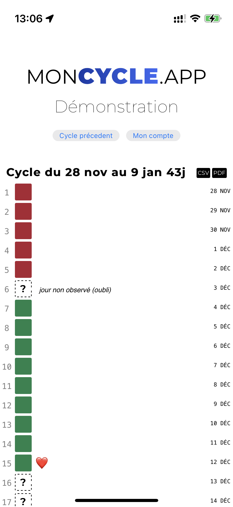

L’application
👩 dédiée au suivi des cycles menstruels
🌳 adaptée à l'usage des méthodes naturelles
🤏 suivi de l'évolution de la glaire cervicale
🌡️ suivi de la température corporelle
🔠 100% compatible avec les méthodes FertilityCare et Billings
📱 pensée pour les téléphones
🌜 Ergonomique et esthétique incluant un mode sombre
📖 code open source
🤪 sans IA et sans pseudo intelligence prédictive
📊 export PDF/CSV des cycles
👩❤️👨 synchronisation des données entre plusieurs appareils
📩 envoi par mail automatique des cycles
🇫🇷 app hébergée et développée en France
🇪🇺 conforme RGPD
🔒 financée par les dons : ni vente des données ni publicité
🛡️ Authentification multifacteur (TOTP)
🤐 données chiffrées au repos et en transit
moncycle.app c'est:
1900femmes et couples qui suivent en confiance et quotidiennement leur fertilité.
moncycle.app c'est:
12000cycles menstruels enregistrés regroupant les informations propres à chaque méthode.
moncycle.app c'est:
260 000observations journalières personnalisées et confidentielles.
Captures d'écran

Le prix? c'est gratuit!
Cette application est GRATUITE et sans publicité ni vente de donnnées! Moncycle.app vit seulement de vos dons.
En faisant un don vous participez:
🖥️ aux frais de serveur et d’hébergement
🔠 au financement du nom de domaine
⏱️ au maintien dans le temps de l'application
👨👩👧 au quotidien du développeur et de sa famille
Offrez un café au développeur de moncycle.app sur Tipeee en donnant par exemple 2€ par mois:
Soutenez moncycle.app sur TipeeeInstallation
Cette application n'est pas sur l'App Store d'Apple ou sur le Google Play Store. Il s'agit d'une application web. Une fois connecté et sur votre tableau, vous pouvez installer l'application en l'ajoutant sur votre écran d'accueil comme montré sur les captures d'écrans ci-dessous. Plus de détails sur la procédure à suivre: installer une web-app.
Les méthodes naturelles
Les méthodes naturelles ? «Ce sont des méthodes basées sur la connaissance des signes de fertilité du cycle féminin. Le couple peut ainsi connaitre avec précision les périodes fertiles ou infertiles qu'il traverse. En fonction de son projet d'enfant, il peut ainsi connaitre le meilleur moment pour transmettre la vie, ou quelles sont ses périodes infertiles lorsqu'il souhaite espacer ou limiter les naissances.» Source: methodes-naturelles.fr
Il existe plusieurs méthodes proposées par différentes associations. Voici une liste non exhaustive:
- Méthode Billings ✅
Méthode 100% compatible avec moncycle.app !
👫 trouver un couple formateur - FertilityCare (NaProTechnologie) ✅
Méthode 100% compatible avec moncycle.app !
👩⚕️ trouver une instructrice - Cyclamen (Symptothermie) ⚠️
Méthode partiellement compatible avec moncycle.app: l'app ne permet une interprétation que partielle des courbes de températures. - SensiPlan (Symptothermie) ⚠️
Méthode partiellement compatible avec moncycle.app: l'app ne permet une interprétation que partielle des courbes de températures. - La méthode M (M fertilité / symptothermie) ⚠️
Méthode partiellement compatible avec moncycle.app: l'app ne permet une interprétation que partielle des courbes de températures.
🧠 moncycle.app n'a pas pour objectif de prédire ou de contrôler le bon usage des méthodes (ni de remplacer vos moniteurs) mais seulement de proposer un support numérique. Vous restez le cerveau derrière votre tableau. Si vous ne connaissez pas les méthodes naturelles ou si vous avez des questions sur les règles de celles-ci, rapprochez-vous d'un moniteur de l'une des associations ci-dessus.
Héberger à la maison
En tant qu'application open source écrite en PHP et JS, vous pouvez auto-héberger moncycle.app directement sur vos serveurs via YunoHost ou Docker.

Traitement des données et RGPD
🇪🇺 L'application respecte la RGPD (Règlement Général sur la Protection des Données):
- Finalité de la collecte des données: les données collectées ont pour objectif de vous présenter le tableau de vos cycles menstruels le plus simple et le plus complet. C'est le seul traitement de vos données réalisé par l'application.
- Base légale du traitement de données: les données collectées sont celles que vous saisissez manuellement dans l'application, en le faisant vous consentez à envoyer vos données de cycles menstruels sur les serveurs de moncycle.app. Cela permet à l'application de vous présenter vos données sous forme de tableau et de les archiver pour vous.
- Caractère obligatoire ou facultatif du recueil des données: afin d'afficher un tableau de vos cycles complet, vous devez envoyer vos données. Cependant rien ne vous oblige à utiliser l'application ni même à fournir votre nom ou d'autres informations personnelles d'indentification.
- Destinataires des données: les destinataires des données sont: l'application moncycle.app, vous, et les adresses mails que vous aurez configurées dans votre espace. L’application sauvegarde vos données en France.
- Durée de conservation des données: il n'y a pas de limitation dans le temps de conservation des données, autrement dit, les données ne sont pas supprimées automatiquement après une certaine durée de conservation. L'absence de limite vous permet de garder un historique de vos cycles.
- Droits des personnes concernées: vous avez les droits d’accès, de rectification, d’effacement de vos données. L'interface de l'application vous permet d'exercer ces droits en toute autonomie.

{kind=link}
{kind=link}
{kind=link}
{kind=link}
{kind=link}
{kind=link}
{kind=link}
{kind=link}
{kind=link}
{kind=link}